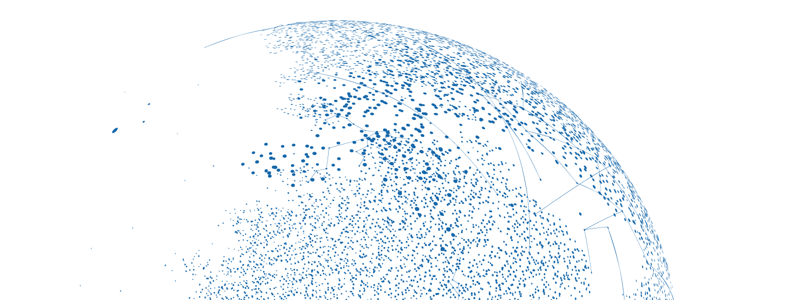

花生地铁行为引擎
花生地铁行为引擎 让到达变成达到 想您所想 知您所需 达您所愿！
基于TensorFlow的机器学习框架聚焦地铁人流轨迹分析，
聚合AI人工智能，机器学习的流式计算，洞悉各大主流城市地铁用户深度网络行为，
搭建地铁全网人流监测和实时预警系统&全球首例用户热数据行为引擎体系，
花生地铁大数据，为合作伙伴打通地铁全域数据，
连接空间左右，关联时光先后，
烙印方寸指尖，理想现实无限！
聚合AI人工智能，机器学习的流式计算，洞悉各大主流城市地铁用户深度网络行为，
搭建地铁全网人流监测和实时预警系统&全球首例用户热数据行为引擎体系，
花生地铁大数据，为合作伙伴打通地铁全域数据，
连接空间左右，关联时光先后，
烙印方寸指尖，理想现实无限！
